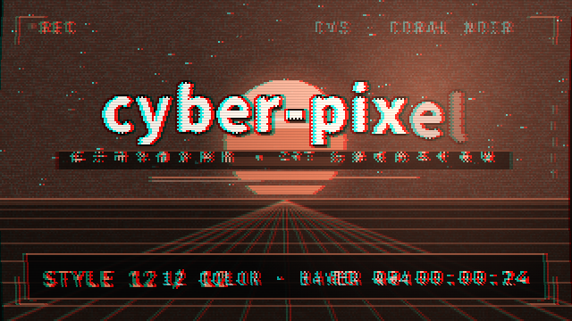
低分辨率像素网格 + CRT 扫描线的霓虹夜城
colourLogic: 深紫黑底 + 品红/青高光，palette 限 16 色感 · typeRules: 点阵/等宽字体；标题不斜体 · motionQuality: 步进感（animate on twos），位移吸附像素格 · soundPalette: chiptune 方波、琶音、噪声军鼓
cvs image --page "templates/cyber-pixel.html?recipe=cyber-pixel" --out preview-cyber-pixel.png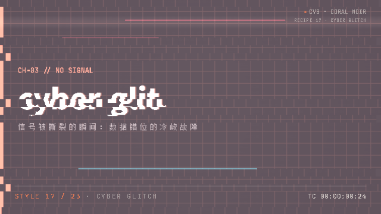
信号被撕裂的瞬间：数据错位的冷峻故障
colourLogic: 近黑底 + 单一高饱和通道色，错位期允许双色散 · typeRules: 等宽/无衬线，故障瞬间字面被切片 · motionQuality: 静止与爆发交替，glitch 有起止帧不留尾 · soundPalette: bitcrush 撞击、白噪门控、低频嗡鸣
cvs image --page "templates/recipe-glitch.html?recipe=cyber-glitch" --out preview-cyber-glitch.png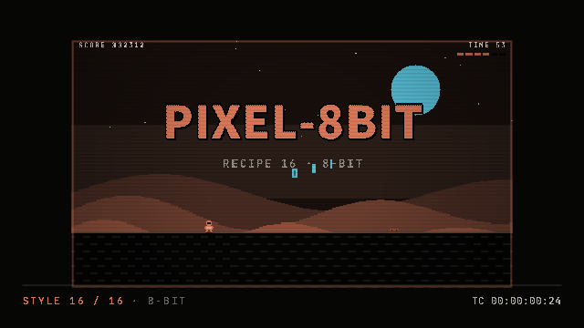
8-bit 游戏时代的欢快像素质感
colourLogic: 高明度互补色对撞，天空蓝绿底常见 · typeRules: 像素字体全大写常见 · motionQuality: 帧率降到 8-12fps 的定格感 · soundPalette: 方波旋律 + 噪声鼓
cvs image --page "templates/recipe-8bit.html?recipe=8bit" --out preview-pixel-8bit.png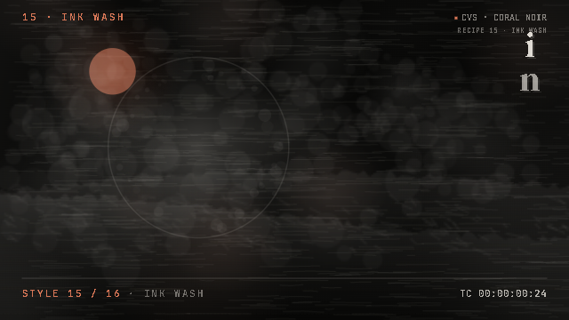
水墨在生宣上的呼吸：留白即主体
colourLogic: 墨分五色 + 一点朱砂，纸面暖白 · typeRules: 宋/楷竖排气质，标题大留白 · motionQuality: 极慢晕开，笔断意连，忌弹跳缓动 · soundPalette: 古琴/箫单音长息、大量静默
cvs image --page "templates/recipe-inkwash.html?recipe=ink-wash" --out preview-ink-wash.png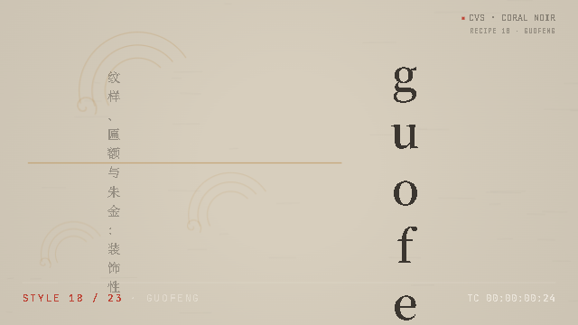
纹样、匾额与朱金：装饰性的东方礼制
colourLogic: 朱砂/石青/藤黄 + 明金描边 · typeRules: 宋体标题、印章落款点缀 · motionQuality: 庄重匀速，开合有序，忌弹性 · soundPalette: 编钟/鼓点正拍，管乐铺底
cvs image --page "templates/recipe-guofeng.html?recipe=guofeng" --out preview-guofeng.png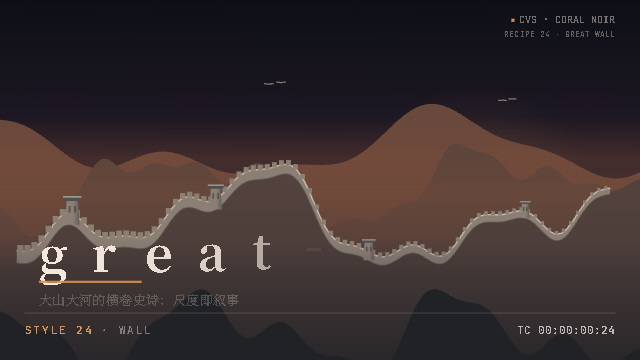
大山大河的横卷史诗：尺度即叙事
colourLogic: 青绿山水或赭石夕照，天光渐变克制 · typeRules: 大字号匾额式标题压山巅 · motionQuality: 长镜头缓推，视差层速差表达纵深 · soundPalette: 弦乐长音 + 大鼓心跳
cvs image --page "templates/recipe-greatwall.html?recipe=great-wall" --out preview-great-wall.png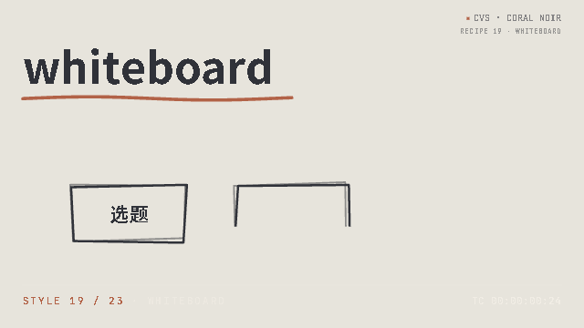
一支手的思考过程：画出来的解释
colourLogic: 白底 + 3 支笔色（黑蓝红经典） · typeRules: 手写字感，箭头批注大量使用 · motionQuality: 描边生长（stroke-dashoffset 式），停顿像思考 · soundPalette: 马克笔沙沙 + 轻快拨弦
cvs image --page "templates/recipe-whiteboard.html?recipe=whiteboard" --out preview-whiteboard.png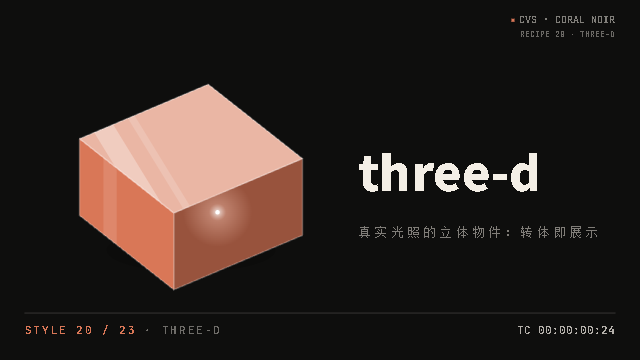
真实光照的立体物件：转体即展示
colourLogic: 影棚布光：主光+轮廓光，背景单色渐变 · typeRules: 无衬线细字远离主体 · motionQuality: 匀速转体 + 关键面停顿打光 · soundPalette: 低频铺底 + 材质音效（咔/嗡）
cvs image --page "templates/recipe-threed.html?recipe=three-d" --out preview-three-d.png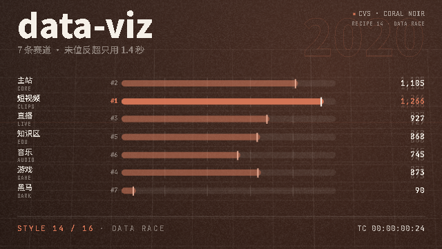
数字自己会跳舞：图表即角色
colourLogic: 分类色板≤6 色，强调序列独占高亮 · typeRules: 数字用等宽对齐，单位常驻 · motionQuality: 缓动收尾落定，数据到位必停一拍读秒 · soundPalette: tick 音阶按数据升调
cvs image --page "templates/recipe-datarace.html?recipe=data-race" --out preview-data-viz.png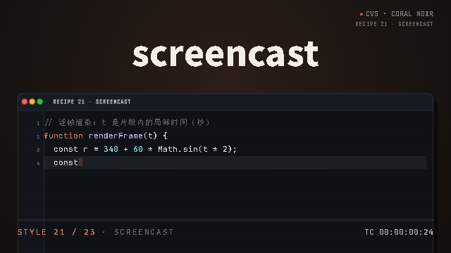
真实界面 + 电影化运镜：所见即可用
colourLogic: 界面自身色 + 品牌描边强调 · typeRules: 步骤标签大字卡，行间留呼吸 · motionQuality: 平移跟光标，缩放聚焦功能点，节奏跟操作因果 · soundPalette: 键盘点击拟音 + 轻节拍
cvs image --page "templates/recipe-screencast.html?recipe=screencast" --out preview-screencast.png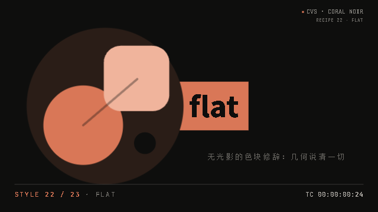
无光影的色块修辞：几何说清一切
colourLogic: 高明度互补/类比色板，纯色无纹理 · typeRules: 粗无衬线，字重对比构建层级 · motionQuality: 弹性适中，位移+缩放组合干脆 · soundPalette: 马林巴/pop 拨弦
cvs image --page "templates/recipe-flat.html?recipe=flat" --out preview-flat.png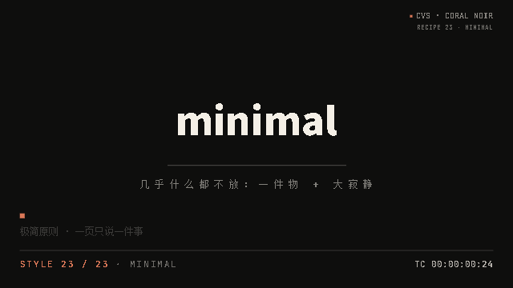
几乎什么都不放：一件物 + 大寂静
colourLogic: 双色制，中性底 chroma≥0.005（禁纯灰） · typeRules: 字号即层级，行长克制 · motionQuality: 极慢极稳，动如未动 · soundPalette: 钢琴单音/环境声留白
cvs image --page "templates/recipe-minimal.html?recipe=minimal" --out preview-minimal.png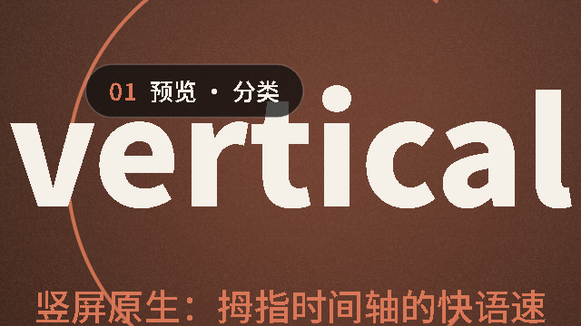
竖屏原生：拇指时间轴的快语速
colourLogic: 跟随所选主题，饱和度略提抗小屏 · typeRules: 9:16 重排行规约，大字号下限更高 · motionQuality: 上推动势多，单段更短 · soundPalette: 跟随 audio.mood，起音更快
cvs image --page "templates/segment.html?recipe=vertical" --out preview-vertical.png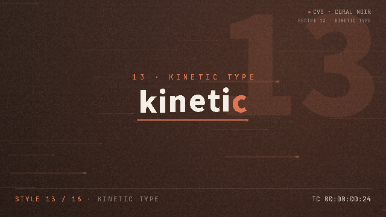
文字是演员：排版打拍子
colourLogic: 2-3 色强对比，逐拍可闪底 · typeRules: 字重/字号/斜正变化承担全部表达 · motionQuality: 词级出场跟拍点，句末停顿 · soundPalette: 人声采样 + 军鼓，节奏驱动
cvs image --page "templates/recipe-kinetic.html?recipe=kinetic" --out preview-kinetic.png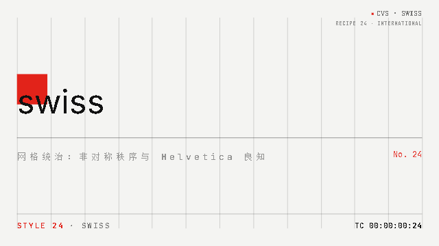
网格统治：非对称秩序与 Helvetica 良知
colourLogic: 白/红/黑或蓝，专色平涂 · typeRules: 无衬线单族到底，左对齐硬回行 · motionQuality: 栏位级位移，克制缓出 · soundPalette: 机械节拍、钢琴扣
cvs image --page "templates/recipe-swiss.html?recipe=swiss" --out preview-swiss.png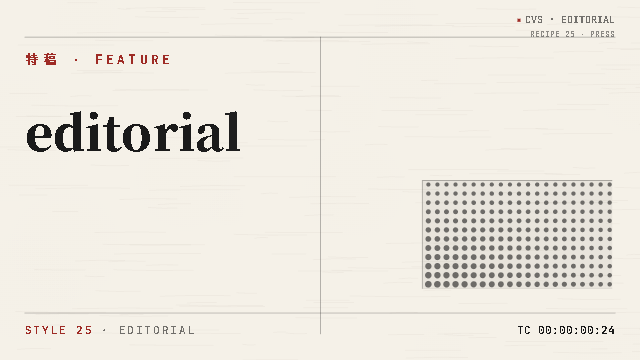
杂志跨页：衬线标题的叙事腔调
colourLogic: 纸感底 + 双色系，图片主导饱和 · typeRules: 衬线大标 + 无衬线正文对唱 · motionQuality: 翻页式分区显现 · soundPalette: 弦乐拨奏 + 纸张声
cvs image --page "templates/recipe-editorial.html?recipe=editorial" --out preview-editorial.png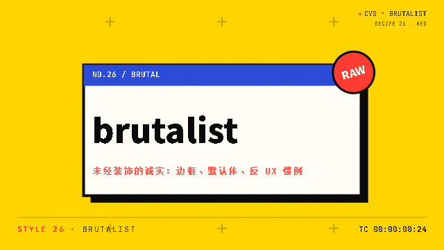
未经装饰的诚实：边框、默认体、反 UX 惯例
colourLogic: 黑底白/黄，或反相；允许刺眼对比 · typeRules: 等宽/系统字体大字号，全大写 · motionQuality: 硬切，无缓动或线性位移 · soundPalette: 工业噪声门控、失真相位
cvs image --page "templates/recipe-brutalist.html?recipe=brutalist" --out preview-brutalist.png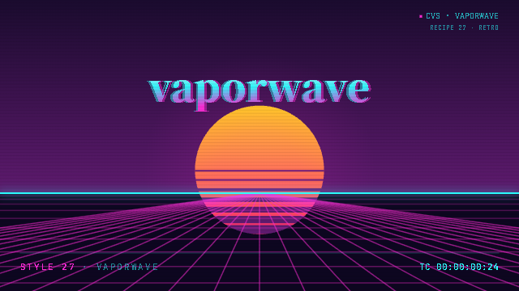
假日算机的乡愁：网格地平线与落日
colourLogic: 品红/青/紫渐变落日，固定高光 · typeRules: 铬渐变标题 + 全角片假名点缀 · motionQuality: 匀速巡航镜头，闪烁有规律 · soundPalette: 慢放采样、pad 长音
cvs image --page "templates/recipe-vaporwave.html?recipe=vaporwave" --out preview-vaporwave.png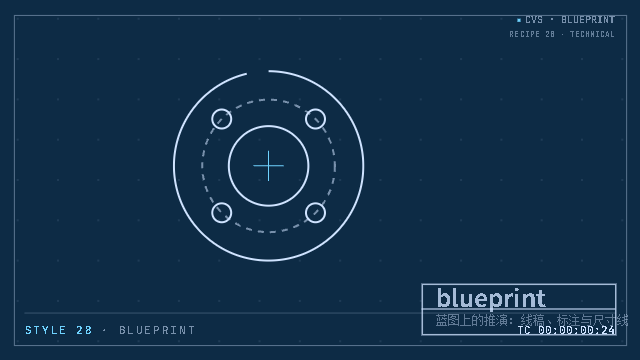
蓝图上的推演：线稿、标注与尺寸线
colourLogic: 石青底白线或白底蓝线 · typeRules: 等宽小注 + 大写标号 · motionQuality: 按工序展开装配感 · soundPalette: 圆规/直尺拟音 + 电子脉冲
cvs image --page "templates/recipe-blueprint.html?recipe=blueprint" --out preview-blueprint.png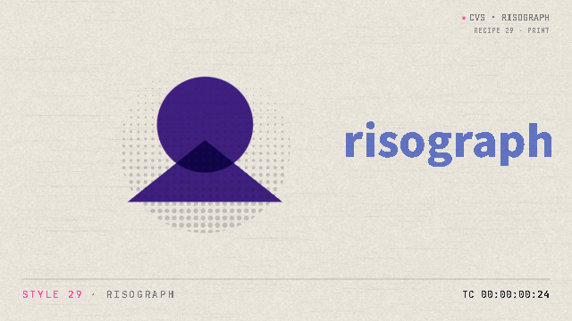
双色套印的错位浪漫：Riso 荧光油墨
colourLogic: 双色限定（ fluores 粉+蓝经典），叠色第三色 · typeRules: 粗几何字，油墨压字 · motionQuality: 套色逐帧错位闪现 · soundPalette: 印刷机节奏 lo-fi
cvs image --page "templates/recipe-risograph.html?recipe=risograph" --out preview-risograph.png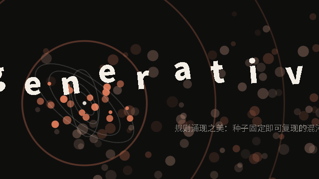
规则涌现之美：种子固定即可复现的混沌
colourLogic: 单色渐层或双色调映射 · typeRules: 极简参数读数可露出 · motionQuality: 由 (t,seed) 纯函数驱动，禁无种子 random · soundPalette: 颗粒合成、随形变音高
cvs image --page "templates/recipe-generative.html?recipe=generative" --out preview-generative.png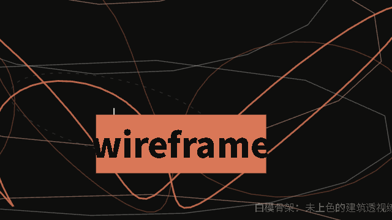
白模骨架：未上色的建筑透视练习
colourLogic: 中性灰阶 chroma≥0.005 · typeRules: 小注释体量 · motionQuality: 体量缓转/拆解 · soundPalette: 空灵 pad + 结构敲击
cvs image --page "templates/recipe-wireframe.html?recipe=wireframe" --out preview-wireframe.png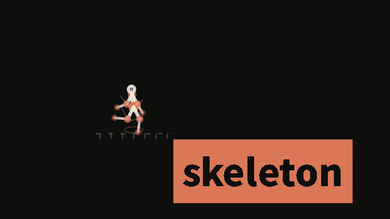
骨骼绑定演示：关节如何驱动角色
colourLogic: 底暗线亮，关节高亮色 · typeRules: 解剖学标注小字 · motionQuality: 循环动作库（走跑跳），慢放插值可见 · soundPalette: 机械关节 + 计拍音
cvs image --page "templates/recipe-skeleton.html?recipe=skeleton" --out preview-skeleton.png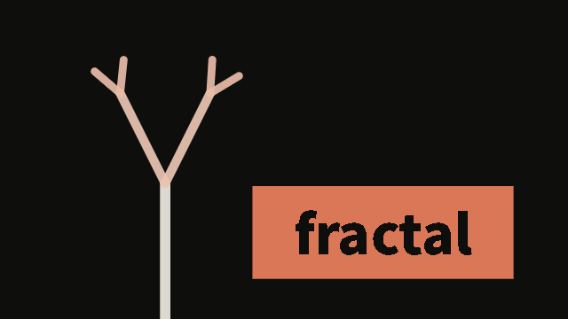
分形缩放：自相似的深渊推镜
colourLogic: 迭代深度映射色带 · typeRules: 缩放倍率读数 · motionQuality: 指数推镜匀速（在对数域） · soundPalette: 上升 Shepard 音
cvs image --page "templates/recipe-fractal.html?recipe=fractal" --out preview-fractal.png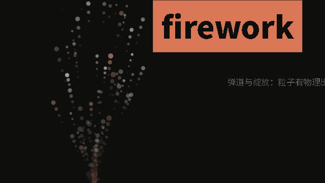
弹道与绽放：粒子有物理出身
colourLogic: 夜黑底 + 高亮焰色，余烬渐暗 · typeRules: 无字或一语点题 · motionQuality: 加速度真实（重力常数统一） · soundPalette: 升空哨 + 爆响 + 余音
cvs image --page "templates/recipe-firework.html?recipe=firework" --out preview-firework.png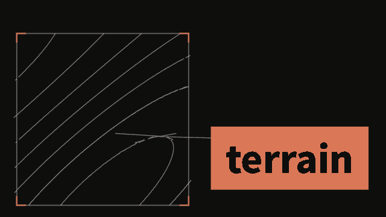
等高线测绘：把数学画成地貌
colourLogic: 海拔分带配色（深谷到雪线） · typeRules: 坐标刻度小注 · motionQuality: 缓慢环绕/推近，等高线生长 · soundPalette: 风声 + 低频地形嗡鸣
cvs image --page "templates/recipe-terrain.html?recipe=terrain" --out preview-terrain.png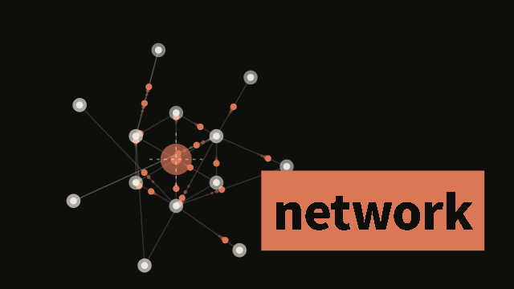
节点脉冲：连接本身是主角
colourLogic: 深底亮线，单点高亮传播 · typeRules: 节点标签克制露出 · motionQuality: 布局缓沉（阻尼），脉冲跟拍点 · soundPalette: 网络包点击 + 共鸣扩展
cvs image --page "templates/recipe-network.html?recipe=network" --out preview-network.png